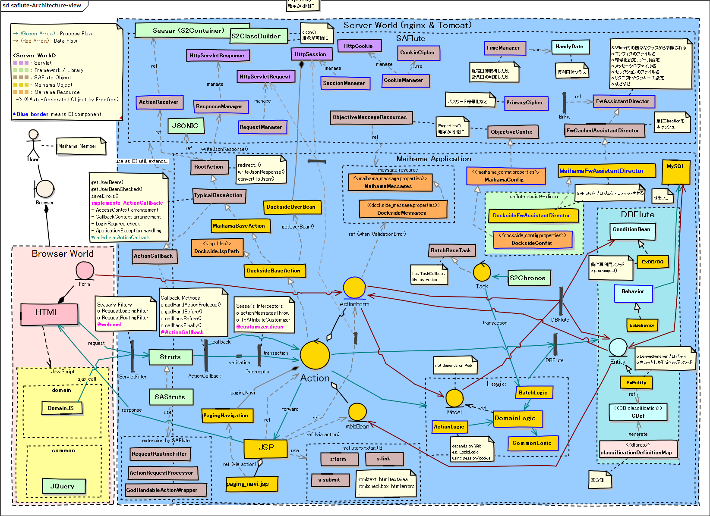

SAFlute
SAFluteとは？
DBFluteを使って SAStruts を最適化した拡張モジュールです。
配布はソースコードだけ
jarファイルとしては提供されてはおらず、ソースコードだけが公開されており、自由に閲覧・取り込み・拡張ができるようになっています。"DBFluteの別荘リポジトリ" にて公開されていて、gitクライアントがあれば誰でもチェックアウト可能です。
詳しくは、SAFluteのプロジェクト直下に INTRO_ja.txt がありますのでそちらをご覧下さい。さらに、それぞれのプロジェクトに README_ja.txt もあります。
SAFlute Template
有志の方が作ってくださっている、SAFluteの環境構築のための Eclipse プラグインがあります。それを使う事で、SAFlute環境を手っ取り早く作ることができます。
アーキテクチャ
SASFluteを使った Example プロジェクト Maihama (Webアプリ名は Dockside) が参考になります。ソースコードをチェックアウトして、アーキテクチャ概念マップと照らし合わせて追ってみると良いでしょう。 (クリックすると画像が開きます)
アーキテクチャ概念マップ
図 : SAFluteアーキテクチャ概念マップ 
{kind=link}
きっかけを作った二つのアプローチ
SAFluteには、様々な最適化が施されていますが、それらを実装するきっかけを作った最初の二つのアプローチがあります。 これらの実装から全ては始まり、どんどん深みに入っていきました。
- Action, JSP Name Identity
- ActionクラスやJSPファイルの名前を識別しやすく
- Action Return TypeSafe
- Actionの@Executeメソッドの戻り値をタイプセーフに
Action/JSP Name Identity
アクションクラス名に一工夫
いわゆる IndexAction だらけ問題に対応しています。(ListActionだらけ、AddActionだらけ)
ぱっと見たいActionクラスがあっても、ctrl + shift + R (リソースの検索) をしたときに、大量の IndexAction や ListAction の前に立ち尽くしてしまう問題です。通常のSAStrutsにおけるクラス名とURLのマッピングルールは以下の通りです。
- member.ListAction
- /member/list/
- login.IndexAction
- /login/
できれば、MemberListAction でも /member/list/ にマッピングしたいと。そうすればクラス名による検索がしやすくなります。ただそのままでは /member/memberList/ というURLになってしまいます。
SAFluteでは、パッケージ名をクラス名のプレフィックスとして付与して識別性を高められます。
- member.MemberListAction
- /member/list/
- login.LoginIndexAction
- /login/
※例えば、/member/purchase/list/ であば MemberPurchaseListAction となる
JSPファイル名でも同じように
これは、JSPでも同じような拡張がされています。
s:form や s:link でaction属性やhref属性を省略した場合のマッピングは以下の通りです。
- member.MemberListAction
- /view/member/member_list.jsp
- login.LoginIndexAction
- /view/login/login_index.jsp (or login.jsp)
※例えば、/view/member/purchase/member_purchase_list.jsp であば MemberPurchaseListAction となる
通常のやり方と互換性があり
もちろん、以前のようなシンプルなクラス名やファイル名でも動きます。 単にマッピングの対象となるクラスが増えただけであり、既に通常のSAStruts構成のアプリにも適用しやすくなっています。
Action Return TypeSafe
タイプセーフな戻り値指定
Actionクラスの@Executeのメソッドの戻り値をタイプセーフに実装できます。
通常のSAStrutsにおける return の実装は以下の通りです。
e.g. 通常のSAStrutsにおける return の実装 @Java
// JSPファイル名を指定してフォワード
return "list.jsp";
// URL (Actionクラス) を指定してリダイレクト
return "/edit/" + listForm.memberId + "/?redirect=true";
これが、SAFluteでは以下のように実装できます。
e.g. SAFluteにおける return の実装 @Java
// "pa" で補完すればJSPの候補が出てくるので選ぶだけ
return path_Member_MemberListJsp;
// "redi" で補完して redirect メソッドにClassクラスでアクション指定
return redirectById(MemberEditAction.class, listForm.memberId);
FreeGenでJSPのパス定義を自動生成
JSPの path_Xxx の定義は、DBFlute の FreeGen と言われる機能で自動生成されます。JSPファイルを作成したら(作り途中でもOK)、manage.bat(sh)を叩いて 12 番を選びます。すると、Actionクラスの return 部分で pa で ctrl + space で補完すれば選択できます。
redirectメソッドでClassクラス指定
redirectXxx()メソッドは、Actionのスーパークラスに用意されています。redirectById() だけでなく、GETパラメーターを追加できるメソッドなど色々用意されています。XxxActon.class で指定できるので、リンク切れはありませんし、ctrl + クリック (F3) で遷移先のActionのプログラムをすぐに見ることができます。
間違えにくく、変更に強く、追跡しやすい
タイプセーフにすることで打ち間違えなく実装できるのと同時に、画面構造の変更などが発生したときに影響範囲を検知しやすくなります。 また、ctrl + クリック (F3) や ctrl + shift + G (呼び出し側の検索) と組み合わせることで、処理の追跡がしやすくなります。
実は、この改善は、アクションクラス名の識別性の向上が前提となっています。例えば、いくらタイプセーフでも、ListAction.class では、どの ListAction にリダイレクトするのかどうかがさっぱりわかりませんので。
SAStrutsと半同棲の三ヶ月
SAStrutsとDBFluteの構成で、少人数でのリーン・スタートアップのサービス構築において生まれました。 基本思想と構成は既に運用実績のあるアーキテクチャと言えます。